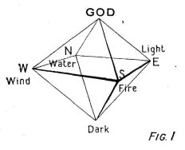
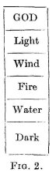

S. Ephraim's Prose Refutations of Mani, Marcion and Bardaisan. Transcribed from the Palimpsest B.M. Add. 14623 by the late C. W. MITCHELL, M.A., C.F., volume 2 (1921). Introduction by F. C. Burkitt
CHRONOLOGICAL TABLE
| A. GR. | A.D. | |
| MARCION left the Catholic Church | 449 | 138 |
| BARDAISAN born | 11 July, 465 | 154 |
| MANI born | 527 | 216 |
| " first proclaimed his Religion, | 20 March, 553 | 242 |
| " killed by Bahram (Varanes I) | 586 | 273 |
| S. EPHRAIM died | 9 June, 684 | 373 |
For Marcion, Bardaisan, and Ephraim, these statements are taken from the Chronicon
Edessenum (ed. Guidi, 1903). The date of Mani's birth is given by Mani
himself in the Shapurakan (quoted by Al-Biruni, pp. 121, 190); his Religion is
dated according to An-Nadim (Flügel, p. 149, corrected in Nöldcke, Geschichte
der Perser und Araber, p. 412). The Chronicon Edessenum puts Mani's
birth in 240 A.D., by a confusion with the date of the proclamation of
Manicheism.
BY F. C. BURKITT
1. The MS. Sources.
THE texts edited in these volumes of S. Ephraim's Prose Refutations are the contents of a sixth-century MS. in the British Museum, the two parts of which are numbered Add. 14574 and Add. 14623. The technical description of these MSS. is given in a separate Note : it will suffice here to say that 14574 contains the first 19 leaves (i.e. the first two quires) in their original condition, while 14623 consists of the 88 leaves which a monk named Aaron used in 823 A.D. for transcribing a fresh volume of miscellaneous contents. The original writing was washed out, and as Aaron's own hand is both small and thick it is often very difficult to decipher the ancient script underneath ; the new order of the leaves, moreover, bears no relation to the old, so that it was one of Mr. Mitchell's first difficulties to discover the original sequence of the fragments he transcribed. But this was happily and completely done, and one result was to establish the fact that, irregular as the order was, the 88 leaves of Add. 14623 contain nothing but leaves from the same ancient codex, and that no intermediate gaps occur. The 88 leaves of 14623 are actually the 88 leaves that once came after fol. 19 of Add. 14574. We may therefore reasonably infer that very little is missing at the end, and treat what survives as a connected whole.
From the scribe's point of view the volume consisted of two parts, of nearly equal size. Part I contained the Five Books addressed to Hypatius, edited in vol. i of this edition ; this part has the headline 'Of Hypatius' at the middle and ends of the quires. Part II is more miscellaneous : it consists of seven pieces, none of which have any organic connexion with the others, though |cxii they are all by S. Ephraim. The first of these is directed against certain opinions of Bardaisan about Space and Perception which were contained in a work of his called 'Of Domnus (swYMdd).' Accordingly the scribe uses 'Of Domnus' for the headlines of his Part II, but the title is merely a scribe's fancy, and the remaining six pieces have nothing to do with Domnus. It is not even certain what the title 'Of Domnus' for the lost work of Bardaisan really signified. It may have been a work addressed to a certain Domnus, just as Ephraim's 'Of Hypatius' is the scribe's short title for Ephraim's Five Books addressed to Hypatius. But nothing is known of such a personage. There was a Domnus Bishop of Antioch, the rival of Paul of Samosata, in 269 A.D., but the name was not common in early times.
Following Ephraim's polemic against Bardaisan's Domnus come three tracts against Marcion, succeeded by a metrical discourse against Bardaisan, and a quasi-metrical discourse on Virginity. It is not easy to see why this latter piece was included in the collection, as it has nothing to do with the heresies attacked in the other pieces. Finally there is a prose tract against Mani, which appears to have concluded the volume ; this work is quite distinct from the Discourses to Hypatius, and contains some important references to Manichean doctrines and nomenclature, as well as some direct quotations from lost works by Bardaisan and his school.
I have been able to supply from other sources a certain number of confirmations and additions to the text of Add. 14623, so ingeniously deciphered by Mr. Mitchell. These are : (1) a long quotation from Book IV and a short quotation from Book V of the Hypatius,1 both taken from one of the ancient collections of doctrinal Extracts in which the Nitrian Library was so rich. The two quotations together make up 103 lines, which is just as long as one of the three-column pages of the MS, or as one of the pages of the English translation.2 Short as the extracts are they afford a most valuable indication of the degree of accuracy which Mr. Mitchell was able to attain in the difficult work of decipherment, and encourage readers who cannot examine the Palimpsest |cxiii for themselves to accept the Syriac text as printed in these volumes with a very considerable measure of confidence.
(2) Similar extracts from the metrical Discourse against Bardaisan will be found noted in the text of this volume. The longest of these are taken from Add. 14623 itself, as the monk Aaron, before obliterating the ancient writing, copied out the equivalent of six pages of the printed Syriac, i.e. between two and three pages of the ancient MS. A good deal of the part thus copied out by Aaron and now preserved in the upper writing of 14623 is practically illegible in the ancient writing, so that the extracts make a considerable addition to our knowledge.
(3) Aaron copied out the whole of the Discourse on Virginity, which therefore survives entire. Unfortunately, from the point of view of the modern scholar, this is much the least interesting piece in the volume, but as in the case of the other extracts it enables us to check Mr. Mitchell's work in parts where the Palimpsest is too illegible to make a continuous text. It is curious that Mr. Mitchell should not have noticed these extracts from the lower text in the upper writing, all the more as the extracts from the Discourse against Bardaisan had been published long ago by Overbeck. But it was a fortunate oversight, for (as I said above) it enables us to check the accuracy of his work of transcription.
(4) The Discourse on Virginity, which is written in a poetical style, but not
in any regular metre, was afterwards turned into metrical Hymns by a process of
curtailment and transposition. This form survives in Vat. Syr. cxi. (A.D. 522)
and some later MSS. in the British Museum. The text is printed by Lamy at the
end of his vol. ii., but as we possess Aaron's transcript of the original there
was no need to record the variations.
2. S. Ephraim as a Controversialist.
From the point of view of a modern scholar, whose chief interest is to recover the lost works and theories of ancient thinkers, whether orthodox or heterodox, S. Ephraim's literary methods are very unsatisfactory. He makes few direct quotations from the writers whom he is controverting, nor does he explain the |cxiv outlines of their system, or distinguish the books of his opponents. It is all piecemeal work. No effort is made to understand the opponent's system as a whole, but single debating points are taken, sometimes with a good deal of ingenuity, in order to shew the weak places of the adversary. As we do not possess the corresponding Marcionite or Bardesanian polemic against the Catholic system, the result is to give an impression of Catholic common sense as opposed to heretical fancy or perverseness.
This is unfortunate in two ways. At the time, no doubt, it was quite an effective method of convincing Ephraim's supporters that reason was on their side and folly on the side of the vaunted heretical philosophy. In our day it has sometimes an opposite effect. We see that justice is not being done to the heretics, that the Catholic writer, who alone now survives, is both judge and advocate. We dimly feel that the controversy is about great subjects, that these heretics were thinkers conscious of the difficulties of the greater problems of human life, some of which still perplex us. and we sometimes, by a kind of reaction, tend to assume that the heretical systems were really philosophical, nearer to our ways of thinking than the world in which the Catholic controversialist lived. At least we tend to assume that the systems of the greater heretics were consistent wholes.
Yet this is by no means certain. I venture to hope that a really consistent philosophy, unhampered by definitely wrong beliefs, whether about the physical or moral world, would have had more power of successful resistance. The religion both of Marcion and of Mani must have had in them much that corresponded to human needs, or they would not have had their long and honourable records of persistence under persecution ; but they were both hampered by irrational elements.
One point may be urged in S. Ephraim's favour. So far as we know, though he is unsympathetic he is not unfair. He does not seem actually to misrepresent the theories of his opponents or to misquote them. The worst that can be said is that he seems totally unconscious of the difficulties involved in these controversies, and this all the more as his work is wholly critical and destructive, except to a certain extent in the treatise against Bardaisan's Domnus. He is content with picking holes in his antagonists |cxv and does not give us his own philosophy, except by scattered hints.
On this perhaps a few words may be said, mainly with regard to the meaning of certain Syriac terms. Ephraim may be described as a Monist and a Materialist. That is to say, he recognises only one self-existing original entity or being ()YtY) , Ithya), viz. God. The opposite to an Ithya is )dYBB (p. 219, l. 41), i.e. a thing made. What we see around us in this world are made things, things which came into being by God's will. Properties and characters were given to made things by God's will, and so, if He wills it, their properties are liable to change. An Ithya, on the other hand, does not and cannot change ; it has a 'bound nature ' ([Syriac]).
At the same time, created things do actually exist; they have 'substance,' which varies according to the 'nature' of the thing. For 'substance' the Syriac is [Syriac] (knoma), and for 'nature' [Syriac] (kyana). The word knoma is of considerable interest, inasmuch it has been chosen to render u9po&stasis, i.e. 'Person' in speaking of the Trinity, while bar kydna ('of the same Nature') is used for o9moou&sion. The special value of the use of these words in these treatises is that S. Ephraim is employing them philosophically, yet quite apart from their special theological use to render certain Greek technical terms.
I have translated knoma by 'substance,' but this meaning shades off into 'individuality,' and no doubt this was the aspect of the word that made it appropriate to render Hypostasis or Person in the Trinitarian sense. On p. 63, 1. 30, we find "David his knoma," i.e. "David in his own person," as distinguished from some son or descendant of David. Yet I think there is in knoma always the notion of reality, i.e. of materiality. Ephraim talks about 'black knome' (p. 41, 1. 36), and in p. 174, 1. 20, it is used of wood. The whole passage indeed is worth quotation, as it exhibits very well Ephraim's philosophy of substance. "Fire," he says, "is buried and dead imperceptibly (in wood), and the rubbing of one bit of wood with another brings it to life, to the destruction of both. For when it has come to life it turns and burns the substance which gave it life by being conjoined with it." That is to say, Fire is a separate substance really existing within |cxvi the substance of wood. On the other hand, verbal nouns like 'buying' and 'selling' have no substance (p. 18, 1. 34 f.); they are only notions in the mind.
Ephraim's argument to prove that Space has no substance should be read at length (pp. iv—viii). It seems to me a very creditable piece of reasoning, especially in view of the fact that he did not possess two pieces of mental apparatus which facilitate our discussions of such subjects. He had no word for 'Space' as such, which we can so easily represent to our eyes by the use of a capital letter and (where necessary) of inverted commas ; and neither he nor his opponent Bardaisan had the idea of Cartesian axes, whereby all space is rendered manageable by dividing it into eight cubes all meeting at a definite point, from which measures can be taken.
What is perhaps more remarkable is that Ephraim does not regard Darkness as substantial (p. 40, 11. 7-12). No doubt he was helped to this view by the contrary views of Bardaisan and Mani, who held Darkness to be something positive.3 After all, it is partly a question of terminology. Whatever the corresponding Greek and Latin words may mean, 'Darkness' in English is wholly unsubstantial, the mere absence of Light. But [Syriac] (heshshoxa) in Syriac means the Dark substance, to_ skoteino&n quite as much as the state of Darkness, to_ sko&tos. In translating the notions of Bardaisan and Mani into English it is therefore often more appropriate to speak of the Dark or the Dark substance than of the Darkness.
Kydna, 'nature,' is exactly fu&sis.
It implies generally a set of qualities or characteristics. No
transliteration of ou0si/a is used in these
treatises, and parsopa occurs only once (ii. p. 26, 1. 16), where it
seems to mean 'person' in the ordinary English sense, i.e. 'individual.' |cxvii
3. The System of Marcion.
These treatises tell us more about Syriac-speaking Marcionites than is told in any other extant source. The main result is to shew that they were very similar in their beliefs and practices to the Marcionites elsewhere, especially as described in Eznik's well-known chapters against them.4 In fact, it is very likely that Eznik's account is not so much an original description of the Armenian Marcionites known to him as a translation from some early Syriac writer.
It is important to notice at the outset that S. Ephraim's polemic against Marcion differs in one respect from that of Tertullian and Epiphanius: there is no controversy about Marcion's Gospel. Marcion, who rejected the authority of the Old Testament as the work of the Adversary of Jesus, considered that most of the writings current among Christians had been interpolated in the interests of Judaism, and the only Gospel he received was a shortened recension of Luke. According to Tertullian and Epiphanius, with whom almost all modern scholars are in agreement, Marcion's Gospel was an arbitrary mutilation of the text, while Marcion no doubt regarded it as the genuine Evangel purged of alien elements. In any case it was obviously a variant form of the canonical Luke, and opponents of Marcion who were accustomed to use the Canonical Luke were concerned to vindicate the superiority of the text familiar to them. But Ephraim and the branch of the Catholic Church to which he belonged habitually used the Diatessaron, not the four separate Gospels. He seems to have been quite unfamiliar with the Gospels as separate literary works (though he knew something about the Prologue to the Fourth Gospel),5 and probably did not recognise Marcion's Gospel as being one of the Canonical Four used by Greek and Latin orthodox Christians. However that may be, he says nothing about it. Possibly he did not even know the Marcionite Gospel itself, and only bases his polemic on Marcionite theological and controversial works which quote it. |cxviii
The most striking new fact about Marcionite usage brought out by these treatises is that the Syriac-speaking Marcionites used a different transliteration of the name 'Jesus' from the orthodox. The ordinary Syriac for 'Jesus' is Ow4Y (pronounced 'Isho' by Nestorians but Yeshu' by Jacobites), which is simply the Syriac form of the Old Testament name Joshua.6 This form Ow4Y was used not only by the orthodox, but also by the Manichees. It was therefore a surprise to find that Ephraim in arguing against Marcionites, and certainly in part quoting from their books or sayings, uses the form wsY, a direct transcription of the Greek )Ihsou~ (or 0Ihsou~j). As it is always written wsY, never wsY), I suppose the pronunciation intended is IESU rather than ISU, but I have retained Mitchell's ISU (vol. i. p. li), not only for uniformity but also because it was desirable to emphasise the strangeness of the form wsY.
When Ephraim uses this Marcionite transliteration he is evidently basing his argument on Marcionite texts. The question therefore does arise, how far his references to Gospel incidents are quotations from the Marcionite Gospel. My first impression on reading the First Discourse against Marcion (pp. 50-102) was that he was working on a copy of that Gospel, or at least was conscious of its main peculiarities. After an argument about Adam and the nature of his punishment he goes on to discuss the message of John the Baptist to ISU (pp. 61-87), and this is followed by a discussion of the Transfiguration. Both these incidents are contained in Marcion's Gospel, and most of the textual allusions might be regarded as taken from Luke, though the wording often differs from the ordinary Syriac. But a closer examination made this view more than doubtful: I think Ephraim was, as usual, quoting the Diatessaron loosely from memory, and I do not think there is any tangible evidence that he knew that certain of his Gospel references were taken from passages and incidents which had no place in Marcion's Gospel-book, so that their citation had no weight in an argument against Marcionites. Thus on p. 64, 1. 24, and p. 109,1. 13, he has sarcastic references to 'the girl,' i.e. the daughter of Herodias, playing with John the Baptist's head, |cxix while on p. 108, 1. 45, the 'soldier of the guard ' is mentioned. But the whole incident of Herod's banquet is absent from Luke, and therefore from Marcion's Gospel, while the 'soldier' (espuklatra) is mentioned only in Mk. vi 27. Again, on p. 72, 1. 26 f., Ephraim quotes 'Blessed are the meek in their spirit' : this is an inaccurate combination of Matt, v 5 and Matt, v 3, but neither element of the quotation is represented in the Lucan Beatitudes, accepted by Marcion. Further, 'Blessed is he, except he be offended in me,' on p. 86, 1. 6f., agrees neither with the Syriac vulgate nor with the Sinai Palimpsest text of Lk. vii 23, but it does agree with the Curetonian text of Matt, xi 6. Finally, on p. 82, 1. 5, John is called a Light-bringer, which recalls Joh. v 35, but has no parallel in Luke.
These passages are decisive enough to shew that Ephraim, unlike Tertullian and Epiphanius, is not attempting to confute Marcion out of his own recension of the Gospel. Still less is there reason to regard the few references to S. Paul as taken from the Marcionite 'Apostle.' The most interesting of these, from a textual point of view, is the quotation of 1 Tim. ii 15 on p. 100, 1.10 f.,7 but the argument could have meant little to a Marcionite, because Marcion never accepted the Pastoral Epistles.
The most we can learn from Ephraim about the Biblical exegesis of the Marcionites comes from the few passages which he directly quotes from them. The two most striking of these are to be found on p. 106 in the Second Discourse and on p. 125 in the Third. On p. 106, 11. 38-42, Ephraim suggests that the only reason Marcionites can allege for John the Baptist believing at all in Jesus is a fantastic faith in the unknown : " 'Because,' they say (ml), 'John was near to die he sent his flock by the hand of the two under-shepherds to the Lord of the flock.' " And again, on p. 125, 11. 40-47, Ephraim says : "Two things the Marcionites proclaim about our Lord, which are contrary to each other, for they say (ml), 'He annulled former Laws and healed diseased organs.' " The interest of these simple sentences, which are |cxx shewn by the use of the particle ml to be quotations,8 is that they seem to be polemical, isolated bits of Marcionite answer to orthodox criticism. It is not to be expected that they will be very profound or convincing, because they deal with points on which the Marcionite theory was weakest, viz. the events of the Gospel history. John the Baptist was a specially inconvenient figure, for he is altogether linked up with the Old Testament and Jewish religion, and yet he appears as a forerunner of Jesus. If John recognised Jesus at all he must, as Epiphanius says (Haer. xlii, p. 325), have known of Him before, while to the Marcionites Jesus is the Son of the Stranger, and His coming was altogether unexpected and unprepared. And with regard to the second quotation, it is easy for Ephraim to shew the inconsistency of regarding the cure of human bodies or organs as good, seeing that the whole domain of matter, or Hyle, is accounted by Marcionites as altogether outside the plan of salvation.
One feature of Ephraim's polemic with the Marcionites that cannot help striking the reader who comes to it after reading the tracts against Bardaisan or Mani is its more Biblical character. The religion of Marcion was essentially Christian and Biblical. He is a Dissenter from the orthodox interpretation of the Bible, but his philosophy starts from it. Bardaisan, on the other hand, appears in these controversies as a Cosmologist or Natural Philosopher with a system of his own, who found in the Gospel, as he found in Greek philosophy, certain things which he adopted because they seemed to be in harmony with his own views. Mani also is a thinker, more or less independent of Biblical data. Both to Bardaisan and to Mani their cosmological notions are an essential part of their religion. But I have the impression, that Marcion was only a cosmologist by accident, that he was essentially concerned with morals and the working of the mind and what may be called the psychology of forgiveness.
Ephraim makes some telling points against him over the Voice at the Transfiguration. Marcion, we know, had a clumsy presentation of the Universe as consisting of three Regions, one 'above' the other. In the highest dwelt the Kind Stranger ; |cxxi in the lowest, on the earth, was the domain of Matter ; between them, above the earth, was the domain of the Creator or Maker, the God of Justice and Law, who had made Man out of Matter in his own image. When the Voice came at the Transfiguration, saying, 'This is My Son,' how, says Ephraim, did they know it was the Stranger's Voice, and not that of the God of the Law ? If it was the Stranger, speaking from the heavens above us, how had He got there? This is a good debating point; but just as we see how very much easier the controversy between Ephraim and Bardaisan would have been, if they had considered Space as measured with Cartesian axes, so I venture to think Marcion would have made his meaning clearer if he had placed his Kind Stranger in a 'fourth dimension.'
The essential thing about the Kind Stranger who can and will forgive freely is that He is not in or of this tangible and measurable world. At least this is so, except in so far as the very notions in Marcion's mind are part of the whole of Nature. With this proviso, the whole of Marcion's system is essentially built upon the same lines as the religion outlined in Huxley's famous Romanes Lecture. Nature is red in tooth and claw, in this world an eye is exacted for an eye and a tooth for a tooth (or its equivalent). Action and reaction are equal and opposite, and the Law of the Conservation of Energy seems to be unbroken. But Man can imagine, more or less, another world where this is not the case, and his mind can take refuge in this fairyland, which is outside the visible universe.
Marcion did not, as a matter of fact, put his thoughts in this way. He was, as Ephraim says (p. lvii), 'half in and half out' of orthodox thought, and so was liable to charges of inconsistency. His great merit is that he felt the charm of the Gospel message apart from the sanction of the Old Testament. Ephraim starts off his polemic against Marcion by appealing to the miracles of the Exodus, and to alleged confirmations of Old Testament wonders in the archives of Egypt and Babylon, an argument which now only raises a smile. But Marcion's position is not similarly affected by modern discovery : the God to Whom he gave his allegiance was always outside of this visible world, and if the visible world has been found not to be geocentric that matters |cxxii less to him than to those whose God had His throne 'above the bright blue sky.'
Apart from their views about the Bible the Marcionites appear in these
treatises as an ultra-pietistic school, who fast more than Ezekiel and pray more
than Daniel. Indeed, they claim to pray all day (p. xxxi med.). The early
orthodox Syriac-speaking Church esteemed virginity so highly, that we need not
be surprised that Ephraim does not touch upon Marcion's rejection of Christian
marriage. According to vol. i. p. 129, l. 1 (p. xciv), the Marcionites
worshipped towards the West.
4. The System of Bardaisan.
The treatises of Ephraim add little fresh to what we knew already about Marcion and the Marcionites, but they do add greatly to our knowledge of Bardaisan's system. So scattered and piecemeal, however, are the bits of information which Ephraim gives us that I will begin by quoting what Moses bar Kepha says about him.9
"Bardaisan held about this world that it is composed of Five Entities (Ithye), viz. Fire and Wind and Water and Light and Darkness. Each of these was standing in its own region, Light in the East, Wind in the West, Fire in the South, Water in the North, the Lord of them all in the Height, and their Enemy, the Dark, in the Depth below. Once upon a time, whether from some external body or by chance, they were hurled one against another, and the Dark ventured to come up from the Depth to mingle together with them. Then the pure Entities began to run away and flee from the Dark and appealed to the mercy of the Most High to deliver them from the dirty colour that was mingled with them, i.e. from the Dark. Then, says he, at the sound of the commotion the Word (Memra) of the Intention of the Most High, which is the Christ, came down and cut off the Dark from being in the midst of the pure Entities, and it was hurled down and fell to the lower part of its nature, and He set |cxxiii up each of the Entities into its order in the mystery of the cross. And as for that mixture which came into being from the Entities and the Dark their enemy, He constituted from it this World and set it in the midst, that no further mixture might be made from them and that which has been mixed already, while it is being cleansed and refined by 10 conception and birth until it is perfect."
Moses bar Kepha died 903 A.D., more than five centuries after S. Ephraim, but this account exactly agrees with what we read about Bardaisan's system of the universe on pp. 214-5, so that it may be taken as substantially accurate and used as the starting-point of our description. The most essential feature of Bardaisan's system is that 'God' with him is not the Creator and Source of the stuff of which the Universe is made, but the Arranger of it into an ordered Cosmos. God is not the sole Ithya, the sole self-existent Being or Entity ; besides God there are the four pure substances of Light, Wind, Fire, and Water, and the foul Dark substance. These only make up six Entities, while Ephraim everywhere treats Bardaisan as teaching that there are Seven 11 : it appears to me that the Seventh Entity is Space itself, concerning which Bardaisan said that 'God is in the midst of Space' (vol. i, p. xcvii). 'Greater,' says Ephraim, 'are the praises which Bardaisan uttered concerning Space than those which he uttered concerning the God in the midst of Space' (p. xcvi).
If Space be the Seventh Entity of Bardaisan, we see the point of Ephraim's elaborate discussion of the substantial existence of mathematical Space in the first of the treatises edited in this volume. Ephraim comes to the conclusion that Space is not a thing but a notion ; to Bardaisan, on the other hand, it was a thing of limited extent,12 outside of which nothing existed, while within it God and the Entities, good and bad, lived and moved and had their being.
The configuration of things before ever the world was, which is implied by Moses bar Kepha and by Ephraim on pp. ci, cii, |cxxiv may be represented by Fig. 1. Another configuration of the system of Bardaisan is set forth on p. cvi and in the metrical Discourse, Stanza XLVIII, p. 155, and is represented by Fig. 2. Ephraim tries to shew that each configuration is inconsistent with itself when used to explain the origin of our World, but he does not complain that the two configurations are inconsistent with each other. He is so quick to press debating points of this kind, that I think we may infer from his silence that the two configurations were put forward by Bardaisan less as absolute physical realities, than as presentations or diagrams explanatory of his ideas. No doubt Bardaisan taught that God and the uncreated Entities existed in Space before our World came into being, but the actual disposition of these Entities must, even to a Gnostic teacher of the 2nd century, have been conjectural. What Bardaisan was concerned to assert was that things were originally in a happy state of equilibrium, that something occurred to disturb this equilibrium whereby general disaster was threatened, but that God came to the rescue and confined within certain limits the damage already done and provided for its eventual reparation.13 This corresponds in a sense to the ordinary Christian doctrine of the 'Fall,' but it differs from it inasmuch as it puts the Fall before the construction of our World—nay more, it makes the Fall to be the cause of this World, not a regrettable incident occurring after this World had been made. In this, as we shall see, the Bardesanian doctrine agrees with Manichaeism : in fact, the religion of Mani becomes more comprehensible if the ideas of Bardaisan are recognised as one of its formative elements.
An accusation brought three times by Ephraim against |cxxv Bardaisan is that he picked out analogies here and there where they suited his theories, without attempting to consider the similar instances where his theories would not work. He 'sailed about,' 14 rather like a butterfly. No doubt the philosophy of S. Ephraim is more or less open to the same reproach, but it is likely enough that there was in Bardaisan something of the Dilettante. I shall therefore not attempt to exhibit his Philosophy as a system, when perhaps it never had essential coherence, but rather pick out features of interest which can be gathered from Ephraim's very unsympathetic refutations.
This world and its inhabitants having been the result of a pre-mundane accident, it is not surprising that Bardaisan did not believe in the resurrection of the body. Man, according to Bardaisan, is naturally mortal 15 (I) ; it was Abel, not Adam, who died first (XLI). Our Lord only raises Souls (XCI) : if Death came from Adam's sin, our Lord ought to have rewarded His redeemed with life in this world (II, LXXIV, LXXIX). 'He that keepeth My Word shall not taste Death,' said our Lord, yet all have died; therefore He did not redeem the Body (LXXX). The Body is heavier than the Soul, and not really akin to it (I, LXI, LXV); it cannot cleave to it for ever (XLIV). The effect of Adam's sin was to prevent Souls after death from what Bardaisan calls 'crossing over,' while on the other hand the Life or Salvation brought by our Lord was that He enabled the Souls to cross over into the Kingdom (LXXXII) or, as it is elsewhere called, 'the Bridal-chamber of Light' (LXXXI, LXXXV).
The Body, according to Bardaisan, is incapable of thought, while the Soul is merely ignorant; following the imagery of the Gospel Parable (Matt, xiii 33), he says that the Leaven is the Divine faculty of Reason (mad'a) which God places in the Soul, where it works by its own inherent energy till the whole Soul becomes rational and therefore Divine (LIX, LXI). This Reason he regards as a 'stranger' in the Soul, i.e. it is a gift from God, not a mere natural development.16 |cxxvi
Bardaisan was evidently known as 'the Aramaean Philosopher,' 17 and no one has ever questioned his command over the language and literature of his native land. But on pp. iii—v Ephraim raises the question of his competence in Greek philosophical literature. He says that Bardaisan has mixed up the doctrines of Plato with those of the Stoics, which are contrary to Plato's own teaching, naming (but not quoting) a lost work of Albinus as proving his point. Further on (p. xxii), he accuses Bardaisan of basing his theories of vision upon the accidents of Aramaic gender, regardless of the fact that his analogies would not hold good in Greek. The question therefore arises : Did Bardaisan know Greek ? Or rather, seeing that Bardaisan lived part of his life at the court of Edessa and therefore probably could speak Greek, had he a really first-hand knowledge of any department of Greek literature ?
It is difficult to say for certain ; the impression I get is that he had little or no first-hand knowledge of Greek writings, and I venture to hazard the conjecture that a good deal of the vaguely Hellenic air of the theories opposed by Ephraim is due to Harmonius, the son of Bardaisan, who is said by Theodoret (Haer. 22) to have studied at Athens and become familiar with the language and philosophy of Greece. Harmonius adhered to his father's doctrines ; it seems only likely that some of the confusion between Platonic and Stoic teaching, pointed out by Ephraim in his treatise against Bardaisan's Domnus,18 may be due to the not too accurate learning of an Oriental student picked up in a Western University.19
But did S, Ephraim himself know Greek? According to the traditional Life, it was an acquirement of his latest years and ascribed to miracle, and this would fit in with the internal evidence of his genuine works, apart from the Domnus treatise. After all, Ephraim gives us no quotations from Plato or the Stoics, or even from Albinus (p. 7, 1. 9), and it is the same with the account of |cxxvii Hermetic doctrine in the final treatise (p. xcix). There is nothing in these treatises to prevent us from regarding the information about Greek literature and philosophy which they contain as based on hearsay. No doubt Ephraim was pretty well informed, and he may very likely have taken some pains to find out how far Bardaisan's statements were to be trusted. Possibly also other Syriac writers, some of whom may have known Greek, had done their best to controvert Bardaisan in the century and a half which elapsed between the publication of Domnus and S. Ephraim's refutations. In any case, the controversial tracts here edited do not compel us to ascribe to Ephraim linguistic and literary acquirements which the rest of the available evidence about him make improbable.
That Bardaisan really did regard things in general from a rather narrowly Mesopotamian point of view is clear from his curious etymologies of the names of the Months, about which Ephraim writes on p. cv. The Mesopotamian year began in October ; the name of the first month was Teshri, and that of the second in early times was Marheshwan.20 Teshri seems to be connected with sharri, 'to begin,' as teshmeshta, 'service,' is connected with shammesh, 'to serve' ; Marheshwan might easily suggest the Syriac word rhash, 'to crawl' or 'creep,' though this derivation would not account for the final syllable. At any rate, Bardaisan brings forward these derivations, which Ephraim controverts on the common-sense ground that if the names of the months were significant they would all be significant, whereas Bardaisan failed to find a plausible Syriac derivation for Nisan, i.e. April, or for the months which follow.
We know, of course, more about ancient Kalendars than either Bardaisan or Ephraim. The names of the Mesopotamian months, used also by the Jews after the Exile, are Babylonian, and Marheshwan is known to be an Aramaic corruption of Arah samna, 'the eighth Month.' The Babylonian year began at the Vernal Equinox with the month Nisan; while the October beginning, which put Teshri in the first place, seems to have 'been the immemorial native Aramaean starting-point. In any case it goes back to 312 B.C., the beginning of the Seleucid Era. |cxxviii
The name Marheshwan for November was dropped by the Edessenes at least as early as the Diocletian persecution, and the first four months of the Syriac year were called Teshri I, Teshri II, Kanon I, Kanon II, instead of Teshri, Marheshwan, Kislew, Tebeth. It may be gathered from what Ephraim says on p. 222, l. 34, that the old name Marheshwan was in his days only used in Beth Garmai, i.e. in the district where Nineveh was and Mosul is.21
We learn, further, that the son of Bardaisan, i.e. almost certainly the Harmonius referred to above, speaks of Teshri II for November, whereas his father uses the old name Marheshwan. The extract quoted on p. 223, ll. 14-17, is interesting on several accounts. In the first place, it is in 7-foot metre : —
O Teshri, 'emma dshaqqa,
'audled lan Teshri hreqa.22
"O Teshri, Mother of the Year,
Produce for us another Teshri !"
This is the metre in after years especially associated with S. Ephraim's own name, and so it bears out the tradition that Ephraim took the metres, which Harmonius is credited with having introduced into Syriac literature, and turned them into vehicles for orthodox doctrine.23
Further, Ephraim tells us that this couplet refers to the 'Mother of Life,' asking her to produce and leave behind a daughter after her own likeness. This is quite in the same range of thought as the short extracts from Bardaisan Hymns quoted by Ephraim in the 55th of the Hymns against Heresies (ES. ii 557, 558). Those Hymns are said there to be written by the 'sons' of Bardaisan, while this couplet about Teshri is said to be written by his 'son.' Doubtless in either case Harmonius is meant. There is a distinct difference of atmosphere between this poetry and the words or opinions definitely given as those of Bardaisan himself. |cxxix
But, it may be asked, is not Bardaisan known to have been a poet ? Did he not write the Syriac poem known (in modern times) as 'The Hymn of the Soul' ? In reply I venture to urge that one result of the texts published in these volumes is to render any connexion of Bardaisan with any part of the 'Acts of Thomas' improbable. As I have published two separate translations of the great Hymn from the 'Acts of Thomas,' one of them under the name of The Hymn of Bardaisan,24 a few remarks on this statement may not be out of place.
Even in the little1 book called The Hymn of Bardaisan I had stated that it was doubtful whether it was the work of Bardaisan himself (p. 4), but I then thought it had been really made out that the Acts of Thomas were full of 'Bardesanian' teaching. By 1904, in the book called Early Eastern Christianity, I had become much less certain of this, and now after a very careful study of these 'Refutations' of S. Ephraim it appears to me that the doctrines of Bardaisan are altogether different from those of the Acts of Thomas. What, then, were, the reasons which made modern scholars assume any connexion between these schools of thought ? My friend Prof. A. A. Bevan sums up Ephraim's accusations against Bardaisan, as known before the publication of these treatises, under three heads:—(1) denial of the resurrection of the body, (2) belief in a divine 'Mother,' (3) belief in eternal beings subordinate to the supreme God. These three heresies are all present in the 'Hymn of the Soul,' so that a presumption is created that its doctrine is Bardesanian.25
It may be urged on the other side with regard to (1) that it is a common characteristic of almost all schools of early Christian thought except orthodox Catholicism. As to (2) there is very little to connect the 'Mother' referred to in Ephraim, Ed. Rom. ii. 557, with the Queen of the East in the Hymn. For the latter a much nearer parallel is found in that passage of Aphraates (Patr. Syr. i. 84012) which speaks of the Holy Spirit as a Christian's Mother. And as to (3) the subordinate divine Powers in the Hymn, the 'Nobles' who set their seal to the Letter of the |cxxx supreme 'King of Kings,' they are mere personages of the Heavenly Kingdom, the Celestial Hierarchy, while the 'eternal beings' set by Bardaisan alongside of God are material elements, the Light, the Wind, the Water, the Fire, and the crude Dark Stuff that exists in the depth below. Of these, the characteristic Ithye of Bardaisan, there is no trace in the Hymn of the Soul or in the rest of the Acts of Thomas.
But the reason against ascribing the Hymn to Bardaisan, which seems to me most clearly to emerge from a study of the Refutations published in this work, is the entire absence of the mythic and poetical element in all that Ephraim quotes from him. In these Refutations 'the Philosopher of the Aramaeans' appears as a matter-of-fact man of science, a teacher of positive doctrine about the physical constitution of the world in which we live. To us, no doubt, it is science falsely so called, speculations as groundless as his derivations of the names of the Months. But such as it is, it is positive doctrine about matter and sense-perception ; there is no parabolic setting-forth of the meaning of human life or the ways of Divine redemption.
Moreover, the attitude of Bardaisan towards life is essentially different from that characteristic of the tale of Judas Thomas, including the great Hymn. The Acts of Thomas sets forth a philosophy of life essentially ascetic, and there is nothing ascetic in the attitude of Bardaisan. It is true that he regarded man as naturally mortal, and held that only the immortal soul is redeemed by Christ. But he did not reject marriage, as the Acts of Thomas does. In the Hymn itself there is nothing about marriage or generation, but the food and dress of 'Egypt' are regarded as unclean, and not merely as things temporary and perishable.
I venture to think that the reason which made it even plausible to suggest
that the Hymn of the Soul came from the school of Bardaisan was the very little
positive knowledge that we possessed of the actual teachings of Bardaisan. In
the first volume of this work Mr. Mitchell, under the influence of the theory
here controverted, was at pains to point out all the references and parallels to
the Hymn of the Soul that he could find in the 'Refutations.' They are to be
found on p. lxxxix and p. cvii of vol. i. Of these, the first merely deals with
the meaning of the |cxxxi word sayka
as a standing epithet for a Serpent or Dragon : I willingly admit that it
must mean 'the Swallower,' not 'the Loud-breathing,' all the more because the
ancient Greek translation of the Hymn itself is now found to translate the word
by to_n katapo&thn. The other passage 26
has really very little in common with the Hymn except the word shabra,
i.e. 'childish' or 'inexperienced.' Certainly Ephraim cannot be referring
directly to the Hymn in this passage, for he asks how the Soul leaves
Understanding behind, or how the Soul forgets, whereas in the Hymn this is
directly explained as the result of eating the unclean food of the Egyptians. It
is much more probable that in vol. i. p. cvii, there is no reference at all to
the Hymn, but only to that question, at all times interesting, as to how the
Soul of man can have forgotten, if it really had had a conscious pre-existence.
5. The System of Mani.
The Refutations of Ephraim in the case of the doctrines of the Manichaeans, as in the case of the Marcionites, are chiefly useful as a confirmation and a check to our previous knowledge. The system of Mani, as it appears in these works, is essentially the same religion that is described and controverted in the Acta Archelai and by Titus of Bostra. The special value here of what S. Ephraim has to tell us comes from his early date and the fact that he writes in Syriac. He is only a little later than the other two authorities, and what he reports is undistorted by the veil of Greek language and thought. Ephraim died in 373, so that his Refutations appeared less than a century after Mani's own death.
Just as we started with the account of Bardaisan by Moses bar Kepha it will be convenient in dealing with Mani to follow the account of Theodore bar Khoni as set forth by Cumont in La Cosmogonie Manichéenne,27 because this work gives us more of the actual Syriac terms used by Syriac-speaking Manichees than any other authority except our Refutations.
The Manichees taught their disciples that the first thing they had to do was to distinguish the Two Principles, that is |cxxxii to say, the Light, which is essentially Good, and the Dark, which is essentially Evil. Or rather it would perhaps be more accurate to say that Evil arises by a mixture of the Dark with the Light, and that when such a mixture has taken place, progress towards a better state of things, redemption, salvation, deliverance, is only to be obtained by straining out the Dark from the Light. Besides the Two Principles it was further necessary to understand the Three Moments, that is to say the Past, the Present, and the Future.28 In the Past, the Dark and the Light were separate, but the Dark somehow conceived a passion for the Light its opposite and made an assault upon it, whereby a portion of the Light became mixed with the Dark, was in fact swallowed by it : in the process of this struggle the present world and the race of men came into being, not being wholly of the Light or of the Dark, but being essentially mixed and therefore evil, i.e. incongruous. In the Present the Intelligence which belongs essentially to the Light has contrived a mechanism, whereby the Light is being gradually refined from the Dark and the Dark confined by a wall or prison, so that never again can it overpass its boundary. In the Future, when this refining process is completed, all the Parts of the Light now imprisoned in Men and Animals and Plants will have been refined away : what is left will be burnt out, so far as it is destructible, and the remainder, being wholly of the Dark, will join the original powers of darkness in their eternal prison.
The Two Principles of Light and Dark are thus alone primitive: the ultimate cause not only of that which we see around us, but even of the hierarchy of Light, has been the Attack made by the Dark upon the region of Light. Evil began by Darkness desiring the Light (i. p. xxix) ; it conceived a passion for Good and made an assault on it (i. pp. xxv, xlix, lxxviii; ii. p. xcix med.), it felt, touched, ate, sucked, tasted, and swallowed it (i. pp. xliv, lxxxv). Mani naturally could not explain, any more than Bardaisan could, how this first disturbance of the eternal order took place, but he seems somewhere to have expressed it, that it was as if the Dark from a far distance smelt and perceived that there was 'something pleasant' beyond his region (i. p. lx). Ephraim misses |cxxxiii the point when he merely seizes on it to ask how the Light was far distant from the dark when the two regions lay side by side: Mani's point is, that the beginning of Evil is unregulated desire.
It will be convenient to notice here the asceticism of the Manichaean religion, because it influences even the terms of Mani's cosmology. All generation was to Mani doubly hateful, for it was a fresh mixture. To take life was to cut the Parts of Light imprisoned in a living body ; to produce fresh life was to perpetuate a state of things that ought never to have been. It was equally wrong to sow and to reap, and the Initiates—the Righteous (zaddike), as they called themselves—were not willing even to break bread lest they pain the Light which is mixed with it (i. p. xxx), their food, as we learn from other sources, being wholly prepared for them by mere disciples. In accordance with this the Manichaeans appear to have avoided all words which describe the production of the Hierarchy of Light by words like 'beget,' or even 'create.' We hear of the Father of Greatness, and the Mother of the Living, but the Primal Man is not styled their Son : Mani seems to have carried through the idea of the Logos, or mere Word, as the producing organ. The Father of Greatness neither espouses the Mother of Life nor begets the Primal Man, but calls ()rq)—and they exist.29 There is no syzygy of the Aeons in Manicheism, as in the system of Valentinus ; Ephraim suggests a marriage of the various elements of Light and Dark (ii. p. xcix end), but only by way of sarcasm. When therefore the ZIWANE are called 'Sons' of the Light and the Primal Man is called their 'Father,' these words of relation are used only in a general way to denote origin.
According to Theodore bar Khoni the Manichees called the |cxxxiv ultimate Supreme Good Being [Syriac], i.e. 'the Father of Greatness' but neither He nor His five Attributes or Manifestations, viz. Intelligence, Reason, Thought, Imagination, Intention, are mentioned as such in Ephraim's Refutations. The 'Mother of the Living' is just named in ii. p. xcviii. On the other hand 'the Primal Man' and his five ZIWANE come in for frequent notice. The Primal Man ([Syriac]) is not Adam, but a Heavenly Being evoked for the purpose of repulsing the attack of the Dark upon the realm of Light. According to Ephraim (i. p. xc) the Manichees interpreted John i 4 as referring to this personage, but as he truly remarks the 'Greek' has a plural (to_ fw~s tw~n a0nqrw&pwn).
The first combat between Light and Dark ended in the victory of the latter. The Dark struck the Primal Man senseless and 'swallowed' his Five ZIWANE. That these were five in number is stated in i. pp. lxxix, xc, xcvii. The odd thing is that they are never directly enumerated. From p. lxxix we learn that four of them were Light, Wind, Water, and Fire, but what was the fifth ? Our chief Arabic source (Flügel, Fikrist, p. 87) says 'the gentle breeze,' 30 the Acta Archelai vii says u3lh. There is evidently some confusion here. Cumont, following Beausobre, thinks of a palaeographical confusion between YLH and AHP, but if this were all it remains curious that Ephraim never names the Air as one of the Sons of the Light.
The word Ziwana (? Brilliant) seems to have applied to others of the heavenly Hierarchy, for Theodore speaks of Jesus the Ziwana, who aroused Adam to consciousness (Cumont, p. 46).
The Manichees appear to have been unwilling to represent this all-important combat as entirely a victory for the Dark. |cxxxv On the one hand the Primal Man was left lying unconscious on the field and his Ziwane were swallowed by the Dark, on the other both Ephraim (i. p. lxxix) and Titus of Bostra (A 17) tell us that the Ziwane were used by the Primal Man as a bait (de/lear) to catch the Sons of the Dark and so to return them to their own place.
However that may be, the result was that Light was mixed with the Dark, and the problem then was, first, how to restrain the Sons of the Dark, and secondly, how to separate the Light that had been mixed in them. These Sons of the Dark were called by Manichees [Syriac] (Archons), a word which always has in Syriac the sinister significance of a Demoniac Ruler. In vol. ii. p. xci it is twice used in the singular of the Evil Power.
The Primal Man recovered from his swoon, and aided by fresh Light-powers 31 he 'hunted the Sons of the Dark and flayed them, and made this Sky from their skins, and out of their excrement he compacted the Earth, and of their bones he forged and raised and piled up the Mountains' (i. p. xxxiii), and he did all this in order to strain out from them by rain and dew the 'Parts of the Light' that had been mixed in them. According to Theodore bar Khoni this mixed material world, composed of the parts of the Archons, who yet have particles of Light mingled in their substance, is held in place by five heavenly powers, who are also named in Greek and Latin sources. They are
| [Syriac] | Feggoka&oxoj | Splenditenens |
| [Syriac] | Rex Honoris | |
| [Syriac] | Adamas Heros | |
| [Syriac] | Gloriosus Rex | |
| [Syriac] | 0Wmofo&roj | Atlas Maximus |
Of these the [Syriac] (Sabbala), the Supporter, is mentioned in ii. 20839 (=p. xcviii), and the Splenditenens in the preceding line. Unfortunately only the latter half of the title is legible. The former part (end of l. 37) cannot be read, but it was certainly not [Syriac] or [Syriac]. To me it looks more like [Syriac] or [Syriac], but the fact is that the script has perished. This is all the more |cxxxvi provoking as the meaning of the Syriac word used by Theodore is doubtful.32
The Archons being thus chained up, Theodore tells us that a certain amount of the absorbed Light was refined out of them at once, and from it was made the Sun and Moon and the Stars. But much yet remained in the Archons, and so a new personage was contrived, the Messenger ([Syriac]), called also the Virgin of Light by Ephraim, who 'manifests her beauty to the Archons, so that they long to run after her' (i. p. lxi f.).33 As a result, the details of which may be studied in Cumont's Note (pp. 54-68), plants and animals were produced on the Earth by the Archons, who, fearing to lose all the Light they had absorbed, at last produce a new being, Adam, which they form in the image of God, i.e. in the image of the Primal Man, the divine Once again their design fails, for Jesus the Zawana comes, it is not explained how, to Adam as he lies inert upon the ground. Adam looks at himself and recognises who he is, i.e. that he is a being at least partly made of the Light.34 'Jesus made him stand up and gave him to eat of the Tree of Life.35 Then Adam looked and wept, he lifted up his voice like a roaring lion, he tore his hair, he beat his breast, and said, "Woe, woe to the creator of my body, to him who has bound my soul to it, and to the rebels who have enslaved me!" '36 Ephraim does not refer to this striking passage, which Cumont regards as the actual peroration of the Epistula Fundamenti, one of the most widely read writings of Mani.
So much for the Past. In the Present, according to Mani, a great mechanism has been contrived for refining out of the world what is left of the Parts of the Light that had been absorbed: the arrangement of this mechanism was in fact the salvation |cxxxvii brought by Jesus, when He came on earth and those that saw Him supposed erroneously that He was really a man.37 By it the Light that is separated out is conveyed to the Moon, whereby it waxes for fifteen days, and then when full discharges its load of Light for another fifteen days into the Sun.
The Pillar of Glory ([Syriac]) is named in ii. 208, 1. 37 (=p. xcviii), the only place where the original Syriac term is known to occur. This 'Pillar' is either the way up to the Moon, as the Fihrist seems to imply, or that in which redeemed souls wait till all is fulfilled, as is stated in the Acta Archelai. In either case the Manichees appear to have meant by it the Milky Way. It is also called in the Acta Archelai the Perfect Man, Vir perfectus. Epiphanius changes a0nh&r into a0h&r, but thereby the imagery is spoilt, for it is evidently taken from Eph. iv 13 (ei0s a1ndra te/leion) : the redeemed souls are collected in the Pillar of Glory till all the particles of the absorbed Light have been refined out of the substance of the Archons and the Primal Man is perfect again.38
The most potent agents in refining out the Light are, of course, the fully initiated disciples of Mani, but exactly how they did it cannot be ascertained from S. Ephraim, for obvious reasons. It is not very difficult to be sarcastic with this part of the Manichaean system, and Ephraim takes advantage of most of the obvious openings. What is more interesting is the very small number of the highest class of Initiates, the KPHALPALE ([Syriac], ii. 2057, 20627). In the first of these passages Ephraim speaks of Five, in the second of a Pair, which perhaps means much the same thing. Certainly these personages were able to give all their time to their mysterious work, for there was very little else that it was permitted to a fully initiated Manichee to do. They might neither take life nor produce it, whether animal or vegetable, so that agriculture and cooking were as much taboo as murder and aiultery. In i. p. xciii Ephraim depicts the initiate Manichee women, the ZADDIKATIIA, as sitting idle from religious motives. It is curious to hear a fellow-countryman of S. Alexius and S. Simeon Stylites rebuking the unworldly inactivities of the Manichees! |cxxxviii
In general, as may be seen from the peroration of the Hypatius Discourses, the lives of the Manichaean devotees must have been spent in a manner not unlike that of the 'Sons of the Covenant' and other Christian ascetics of the East: 'their works are like our works, as their fast is like our fast' (i. p. cxix). No doubt they spent a good deal of their time in transcribing and ornamenting their sacred writings, as may be gathered from S. Augustine and from the remains of very handsome MSS. dug up in Turfan in Central Asia. In this they were followers of Mani himself, who 'painted in colours on a scroll the likenesses of the wickednesses which he created out of his mind' (i. p. xciii).
As to the Future, the Manichees, like the Christians, looked forward to a victorious end of the present state of things. When all the Parts of the Light have been refined out of the base material, Evil, which is the result of the mixture of Light and Dark, will have disappeared. The Earth of Light ([Syriac]), in which God dwells and which is itself Divine (i. pp. lviii, lix, xcvi), will be complete and inviolate, and the powers of the Dark will be confined inside their own domain, round which BAN, the Heavenly Builder, has now built a wall and fence, to be the Grave of the Darkness for ever (i. pp. xxx, xlvi, lxxv).
Such are the main outlines of the system of Mani, on almost every part of which the Refutations of S. Ephraim throw a certain amount of fresh light. This is not the place to attempt a critical study of the sources and connexions of this fantastic Religion, that had in spite of almost continual persecution so long and sometimes so victorious a career. I shall only bring forward one point, on which the Refutations curiously confirm the evidence of the Acta Archelai, of Titus of Bostra, and of Evodius, as its elucidation seems to have an important bearing upon the origin of Mani's stock of ideas.
Evodius, the friend and correspondent of S. Augustine, tells us (De Fid. c. Manich. 5) that the Manichees taught that the Souls which deliberately preferred Darkness to Light and the sensual life to redemption will remain for ever conjoined with matter in the region of the Dark. Such souls, together with the rest of the Dark substance from which all the Light has been extracted, will |cxxxix be compacted together in a great round Clod (globus). Titus of Bostra tells us the same,39 and the same doctrine is set forth in the Acta Archelai x, the original Greek of which, as quoted by Epiphanius, speaks of the evil man as being for ever dedeme/nos ei0s th_n bw~lon. In agreement with all this we read at the end of the Third Discourse to Hypatius (i. p. 87, 1. 35 ff.) : 40 'How do they say that some of these Souls who have sinned much and done much wickedness and blasphemed much and have been guilty of great unbelief, those which are found like dregs in the midst of that which they call BOLOS, as they say, that when the Fire dissolves all, within it is collected every thing that is mixed and mingled in created things from the Lights, and "those souls who have done much wickedness are assigned to the realm of the Darkness when it is tortured." '
It is clear from all these testimonies that the Manichees not only held this doctrine, but that they called this mass of burning filth the BOLOS, a word which is not Syriac at all, but the Greek for 'a clod.' 41
Alexander of Lycopolis, himself a heathen, treats Manichaeanism as a New Christianity. This view of it has been unpopular in recent years, for modern scholars have preferred to see in it a more or less independent Oriental Religion, and have tended to consider the form of it which spread to the West and to which Augustine was for so many years a convert as an adaptation fitted to a land where Catholic Christianity had become the established religion. But the name of the Bolus, now attested in the Syriac of Ephraim, cannot have come from anything but a Greek source. It suggests to us that Mani drew his inspiration from the West as much as, if not more than, from the East around him.
And the Bolus does not stand alone. That Mani did call himself the 'Paraclete' is confirmed by Ephraim (ii. p. 20911),42 but |clx this term, though Greek, would have been taken by him from the Syriac Bible. More to our purpose is the fact that the Receivers of the Light, i.e. the Sun and Moon, called [Syriac] in i. 2042=p. xxviii, are elsewhere called [Syriac] (i. 1543=p. xxxvi, i. 286=p. xlii), i.e. u9pode/ktai, a word not very common in literature, the only meaning given for it in Sophocles' Lexicon being 'receivers of taxes.' 43 Here again, therefore, a Manichee technical term is taken from the Greek.
HYLE, i.e. u3lh, is another Greek term which according to Ephraim is used by all three of the systems which he is controverting, but it is only really prominent in Marcion's terminology (i. pp. lxiii, xcix, c') and, if it was really used by the Manichees in the East, it was no doubt borrowed by them from the Marcionites or the Bardesanians.44
Perhaps the truest idea of the direction of Mani's thought may be gathered from the titles of his seven chief works, catalogued for us by An-Nadim.45 Five of these, the Mysteries, the Giants, the Precepts, the Treasure (and we may add the Living Gospel, omitted by An-Nadim), tell us nothing. One, the Shapurakan, was composed in Persian for the benefit of Sapor the Sasanian Monarch, but the seventh, which Alfaric identifies with the Epistula Fundamenti, bore the Greek title of Pragmatei/a.
Whether Mani himself knew Greek is another matter. If we have been right in calling in question Bardaisan's first-hand knowledge of Greek literature it will not be likely that Mani the Babylonian had much real acquaintance with genuine Greek books or thought. What I have in view is the question whether the system of Mani is to be thought of as a form of Oriental Religion which took on a Christian veneer in the Catholic West, or as a peculiar and eclectic Christian Gnosticism. The Greek terms to which I have here called attention appear to me to shew that the non-Oriental, Western, element in Mani's system is much larger than the scholars of the last sixty years have tended to admit.
In particular I cannot agree with the Swedish scholar |clxi Dr. Gillis Wetter in his attempt to represent Manicheism, apart from the personal influence of Mani, as a sort of offshoot of the Mandaean religion.46 Brandt is on the contrary of opinion that 'in the verifiable parallels the Mandaean versions seem to be secondary,' and says further : "The religious teachings of the two faiths, however, were essentially distinct in character ; the fundamental dualism of the Manichaean system—a doctrine that finds a soteriological design even in the creation of the world, and involves an ascetic mode of life—is far removed from the Mandaean view' (E.R.E., MANDAEANS, § 18). On the other hand Dr. Wetter is doubtless right in laying emphasis on the personal influence of Mani himself, the Prophet of his own new Religion.47 The missionary impulse, maintained over two hundred years, the notable steadfastness in danger and persecution, which characterise the Manichees, prove that their bizarre and unscientific theology was to them in some respects a satisfaction of their needs, a way of salvation from the perplexities of this painful world. And if history has any general lesson to teach us about new Religions, it is that they arise when a system or view of the world, which is not too far away from popular aspiration, is combined with a forceful and attractive personality.
Much, therefore, in the initial success of the new Religion depended on Mani himself. And much in the new Religion appealed at once to human religious instincts. It is natural to wish to be a son of the Light. Children cry in the Dark, and 'a pleasant thing it is to behold the sun,' even in sultry Mesopotamia. Moreover Mani seemed to his followers to have explained what the old religions which had gone before him had only hinted at. But beyond these generalities the philosophy which underlies the whole structure has even now a certain appeal, still perceptible through its fantastic barbarian trappings. The Religion of Mani does explain the presence of Evil in the world we live in, and it does combine practical pessimism with ultimate optimism—perhaps the most favourable atmosphere for the religious sentiment. It is true that the Manichees regarded the world we live in as the result of a regrettable accident, so that no |clxii true improvement is possible till it is altogether abolished. As regards this world they are frankly pessimistic : it was bad to begin with, and it will go from bad to worse. But they believed that Light was really greater and stronger than the Dark, that in the end all that was good in their essence would be collected in the domain of Light, a realm altogether swayed by Intelligence, Reason, Mind, good Imagination, and good Intention; and though at the same time there would always exist another region, dark, and dominated by unregulated Desire, it would only be peopled by beings for whom such a region was appropriate, and they would be separated off for ever from invading the region of Light and so producing another Smudge, such as our present world essentially is, according the Manichean view.
To sum up, the Religion of Mani can hardly be comprehended as a heresy from orthodox Catholicism in the sense that Monophysitism, or Arianism, or Montanism, or even Marcion's religion, are 'heresies.' If Arianism be the brother of Catholicism, the Manichean religion is at most a cousin. And Ephraim's Refutations go far to shew that the connecting links are the philosophy of Bardaisan and the organisation of the Marcionites. In common with the Marcionites the followers of Mani were organised as a community of unmarried ascetics with a recognised penumbra of adherents, who supported and maintained them. The orthodox in the Euphrates Valley seem to have organised themselves in Ante-Nicene times on much the same way, but as soon as the Government of the Roman Empire became Christian the Syriac-speaking Church followed the customs of the West, and the Bnai Kyama became an order within the Church instead of its rank and file. But to the Marcionites and to the Manichees the monastic constitution was essential, as it is to the Buddhists further East.48 From the Marcionites also Mani may very well have derived his rejection of the authority of the Old Testament.
The relation of the thought of Mani to Bardaisan is even closer, as will have appeared even in this slight sketch of their |clxiii respective doctrines. In fact we learn from the Fihrist (Flügel, p. 102) that the very first chapter of Mani's Book of the Mysteries was concerned with the Daisanites, i.e. the followers of Bardaisan. With Bardaisan Mani shares the concepts of the attack by the primordial Dark upon the Pure elements of Light, Wind, Fire, and Water, the control of the damage done by the Good God, and a plan for the eventual redemption of souls from the power of the Dark element.
It has been said of a prominent English statesman that his mind fastens on images and banns concepts : I fancy that this is the difference between Mani and Bardaisan. Bardaisan's cosmology is a conflict of forces, Mani's is a drama enacted by a crowd of supernatural persons. Mani, and (so far as we know) Mani alone, excogitated the Splenditenens, the monstrous story of the androgynous Virgin of Light, and the fantastic explanation of the waxing and waning of the Moon. The odd thing is that it should have found so much credence, not only in the immediate time and place of Mani the Founder, but even in the far West for a time and for so many centuries in Central Asia.
No doubt the religion of Mani shews many signs of its strictly Babylonian origin. The mere fact that the special region of Evil was placed in it towards the south shews that its home was an over-hot country. No doubt also many features in it are akin to Persian or even to old-Babylonian religion and never had their counterparts in Greek thought, whether Christian or Pagan. Nevertheless the 'Christian' element remains fundamental. This is clear above all from the important role played in Manicheanism by the creation or formation of Adam and Eve. The Manichee myth is quite different from the story in Genesis, but it is founded upon that story. Mani, like Marcion, rejected the Book of Genesis—which is only another way of saying that his system of thought had been profoundly influenced by it. But Genesis and all the lore connected with Genesis came to Mani from the West, from the Greek-speaking lands, or, as in the case of that which he took from Bardaisan, from sources profoundly influenced by Greek thought, Christian and Heathen.
To conclude this Essay, let me quote the very weighty judgement of Professor Alfaric upon the religion of Mani and its |clxiv literature (Les Écritures Manichéennes, i. 128) : 'The Persian, Arab, and Chinese authors who have written upon the Manichees supply what is lacking in their Latin, Greek, and Syriac predecessors. They generally speak in more direct terms about the Manichean works quoted, because they are less afraid of their diffusion, and being less earnest in their polemics they give us a more objective view. Moreover some of them, such as An-Nadim and Al-Biruni, have in any case more historic sense than Hegemonius (the reputed author of the Acta Archelai), Epiphanius or even Augustine. But they know very little about Christianity, and they do not take much interest in doctrines which are derived from it. Thus they are apt to pass over specifically Christian details in Manicheism which belong to the Bible, and to throw into high relief the reminiscences of pagan mythology which interested them more, thereby giving a false idea of the Manichean literature.'
F. C. BURKITT.
On pp. (6) and (7) of Vol. I Mr. Mitchell gave Tables showing the ancient and the present arrangement of the Quires of the MS, so far as the parts edited in Vol. I were concerned. These are repeated here, together with the parts edited in Vol. II.
SHOWING THE RELATION OF PRIMITIVE QUIRES TO THE MODERN ARRANGEMENT
| Ancient | Modern | |||||||||||
| Quire and Leaf | Quire and Leaf | |||||||||||
| I | Original order preserved in B.M. Add. 14574 | |||||||||||
| II | Original order preserved in B.M. Add. 14574 | |||||||||||
| B.M. Add. 14623 | ||||||||||||
| III | 1 | = | Folio 14 | = | II | 6 | — | — | — | — | — | ┐ |
| 2 | = | 10 | = | 2 | — | — | — | — | ┐ | | | ||
| 3 | = | 9 | = | 1 | — | — | — | ┐ | | | | | ||
| 4 | = | 12 | = | 4 | — | — | ┐ | | | | | | | ||
| 5 | = | 16 | = | 8 | — | ┐ | | | | | | | | | ||
| 6 | = | 11 | = | 3 | — | ┘ | | | | | | | | | ||
| 7 | = | 15 | = | 7 | — | — | ┘ | | | | | | | ||
| 8 | = | 18 | = | 10 | — | — | — | ┘ | | | | | ||
| 9 | = | 17 | = | 9 | — | — | — | — | ┘ | | | ||
| 10 | = | 13 | = | 5 | — | — | — | — | — | ┘ | ||
| IV | 1 | = | Folio 19 | = | III | 1 | — | — | — | — | — | ┐ |
| 2 | = | 22 | = | 4 | — | — | — | — | ┐ | | | ||
| 3 | = | 21 | = | 3 | — | — | — | ┐ | | | | | ||
| 4 | = | 23 | = | 5 | — | — | ┐ | | | | | | | ||
| 5 | = | 20 | = | 2 | — | ┐ | | | | | | | | | ||
| 6 | = | 27 | = | 9 | — | ┘ | | | | | | | | | ||
| 7 | = | 24 | = | 6 | — | — | ┘ | | | | | | | ||
| 8 | = | 26 | = | 8 | — | — | — | ┘ | | | | | ||
| 9 | = | 25 | = | 7 | — | — | — | — | ┘ | | | ||
| 10 | = | 28 | = | 10 | — | — | — | — | — | ┘ | ||
| V | 1 | = | Folio 29 | = | IV | 1 | — | — | — | — | — | ┐ |
| 2 | = | 36 | = | IV | 8 | — | — | — | — | ┐ | | | |
| 3 | = | 44 | = | V | 6 | — | — | — | ┐ | | | | | |
| 4 | = | 34 | = | IV | 6 | — | — | ┐ | | | | | | | |
| 5 | = | 46 | = | V | 8 | — | ┐ | | | | | | | | | |
| 6 | = | 41 | = | V | 3 | — | ┘ | | | | | | | | | |
| 7 | = | 33 | = | IV | 5 | — | — | ┘ | | | | | | | |
| 8 | = | 43 | = | V | 5 | — | — | — | ┘ | | | | | |
| 9 | = | 31 | = | IV | 3 | — | — | — | — | ┘ | | | |
| 10 | = | 38 | = | IV | 10 | — | — | — | — | — | ┘ | |
| VI | 1 | = | Folio 42 | = | V | 4 | — | — | — | — | — | ┐ |
| 2 | = | 39 | = | V | 1 | — | — | — | — | ┐ | | | |
| 3 | = | 35 | = | IV | 7 | — | — | — | ┐ | | | | | |
| 4 | = | 47 | = | V | 9 | — | — | ┐ | | | | | | | |
| 5 | = | 37 | = | IV | 9 | — | ┐ | | | | | | | | | |
| 6 | = | 30 | = | IV | 2 | — | ┘ | | | | | | | | | |
| 7 | = | 40 | = | V | 2 | — | — | ┘ | | | | | | | |
| 8 | = | 32 | = | IV | 4 | — | — | — | ┘ | | | | | |
| 9 | = | 48 | = | V | 10 | — | — | — | — | ┘ | | | |
| 10 | = | 45 | = | V | 7 | — | — | — | — | — | ┘ | |
| VII | 1 | = | Folio 64 | = | VII | 5 | — | — | — | — | — | ┐ |
| 2 | = | 75 | = | VIII | 7 | — | — | — | — | ┐ | | | |
| 3 | = | 71 | = | 3 | — | — | — | ┐ | | | | | ||
| 4 | = | 74 | = | 6 | — | — | ┐ | | | | | | | ||
| 5 | = | 77 | = | 9 | — | ┐ | | | | | | | | | ||
| 6 | = | 70 | = | 2 | — | ┘ | | | | | | | | | ||
| 7 | = | 73 | = | 5 | — | — | ┘ | | | | | | | ||
| 8 | = | 76 | = | 8 | — | — | — | ┘ | | | | | ||
| 9 | = | 72 | = | 4 | — | — | — | — | ┘ | | | ||
| 10 | = | 63 | = | VIII | 6 | — | — | — | — | — | ┘ | |
| VIII | 1 | = | Folio 59 | = | VII | 1 | — | — | — | — | — | ┐ |
| 2 | = | 66 | = | 8 | — | — | — | — | ┐ | | | ||
| 3 | = | 67 | = | 9 | — | — | — | ┐ | | | | | ||
| 4 | = | 65 | = | 7 | — | — | ┐ | | | | | | | ||
| 5 | = | 78 | = | VIII | 10 | — | ┐ | | | | | | | | | |
| 6 | = | 69 | = | 1 | — | ┘ | | | | | | | | | ||
| 7 | = | 62 | = | VII | 4 | — | — | ┘ | | | | | | | |
| 8 | = | 60 | = | 2 | — | — | — | ┘ | | | | | ||
| 9 | = | 61 | = | 3 | — | — | — | — | ┘ | | | ||
| 10 | = | 68 | = | 10 | — | — | — | — | — | ┘ | ||
| IX | 1 | = | Folio 88 | = | IX | 10 | — | — | — | — | — | ┐ |
| 2 | = | 52 | = | VI | 4 | — | — | — | — | ┐ | | | |
| 3 | = | 56 | = | VI | 8 | — | — | — | ┐ | | | | | |
| 4 | = | 84 | = | IX | 6 | — | — | ┐ | | | | | | | |
| 5 | = | 57 | = | VI | 9 | — | ┐ | | | | | | | | | |
| 6 | = | 50 | = | VI | 2 | — | ┘ | | | | | | | | | |
| 7 | = | 83 | = | IX | 5 | — | — | ┘ | | | | | | | |
| 8 | = | 51 | = | VI | 3 | — | — | — | ┘ | | | | | |
| 9 | = | 55 | = | VI | 7 | — | — | — | — | ┘ | | | |
| 10 | = | 79 | = | IX | 1 | — | — | — | — | — | ┘ | |
| X | 1 | = | Folio 85 | = | IX | 7 | — | — | — | — | — | ┐ |
| 2 | = | 58 | = | VI | 10 | — | — | — | — | ┐ | | | |
| 3 | = | 80 | = | IX | 2 | — | — | — | ┐ | | | | | |
| 4 | = | 86 | = | IX | 8 | — | — | ┐ | | | | | | | |
| 5 | = | 54 | = | VI | 6 | — | ┐ | | | | | | | | | |
| 6 | = | 53 | = | VI | 5 | — | ┘ | | | | | | | | | |
| 7 | = | 81 | = | IX | 3 | — | — | ┘ | | | | | | | |
| 8 | = | 87 | = | IX | 9 | — | — | — | ┘ | | | | | |
| 9 | = | 49 | = | VI | 1 | — | — | — | — | ┘ | | | |
| 10 | = | 82 | = | IX | 4 | — | — | — | — | — | ┘ | |
| XI | 1 | = | Folio 8 | = | I | 8 | ||||||
| 2 | = | 7 | = | 7 | ||||||||
| 3 | = | 6 | = | 6 | ||||||||
| 4 | = | 5 | = | 5 | ||||||||
| 5 | = | 4 | = | 4 | ||||||||
| 6 | = | 3 | = | 3 | ||||||||
| 7 | = | 2 | = | 2 | ||||||||
| 8 | = | 1 | = | 1 | ||||||||
| 9 | = | [Not extant] | = | |||||||||
| 10 | = | [Not extant] | = | |||||||||
At the time of the making of the Palimpsest foll. 42 and 45, 80 and 87, must have been refolded, so that what had been the inner pages became outer pages.
Headlines on the 5th and 10th versos of each ancient Quire, e.g. [Syriac]
fol. 37a (= VI. 5), and [Syriac] fol. 57a (= IX. 5). "When therefore
we find [Syriac] on fol. 4a. we must infer that it is the 5th leaf of Quire XI,
which therefore has lost two leaves. Similarly Quire I of Add. 14574 has lost
one leaf, the text beginning on the verso |clxvii
of what would have been I. 2. No doubt there was a blank guard-leaf at
the beginning, now torn off; probably there was as much at the end. What is lost
therefore is most likely not more than one or two pages of text, possibly only a
few lines.
GIVING THE TRANSCRIBED LEAVES OF THE PALIMPSEST ACCORDING TO THE ORDER OF THEIR NUMBERING IN THE CATALOGUE, AND THE PAGES OF VOL. I AND VOL. II ON WHICH THE TEXT OF EACH LEAF BEGINS
| Folio 1 | begins in Vol. II, | p.225 | Folio 30 | begins in Vol. I, | p. 176 | |
| 2 | " | 220 | 31 | " | 146 | |
| 3 | " | 218 | 32 | begins in Vol. II | p. 1 | |
| 4 | " | 215 | 33 | begins in Vol. I | p. 137 | |
| 5 | " | 211 | 34 | " | 124 | |
| 6 | " | 207 | 35 | " | 164 | |
| 7 | " | 202 | 36 | " | 115 | |
| 8 | " | 198 | 37 | " | 173 | |
| 9 | begins in Vol. I | p. 33 | 38 | " | 151 | |
| 10 | " | 28 | 39 | " | 160 | |
| 11 | " | 46 | 40 | " | 181 | |
| 12 | " | 37 | 41 | " | 133 | |
| 13 | " | 63 | 42 | " | 155 | |
| 14 | " | 23 | 43 | " | 142 | |
| 15 | " | 50 | 44 | " | 120 | |
| 16 | " | 42 | 45 | belongs in Vol. II, | p. 10 | |
| 17 | " | 59 | 46 | begins in Vol. I, | p. 129 | |
| 18 | " | 55 | 47 | " | 168 | |
| 19 | " | 68 | 48 | belongs in Vol. II, | 6 | |
| 20 | " | 85 | 49 | " | 190 | |
| 21 | " | 77 | 50 | " | 126 | |
| 22 | " | 72 | 51 | " | 135 | |
| 23 | " | 81 | 52 | " | 108 | |
| 24 | " | 94 | 53 | " | 175 | |
| 25 | " | 103 | 54 | " | 170 | |
| 26 | " | 98 | 55 | " | 139 | |
| 27 | " | 89 | 56 | " | 113 | |
| 28 | " | 107 | 57 | " | 122 | |
| 29 | " | 111 | 58 | " | 155 | |
| Folio 59 | begins in Vol. II, | p. 60 | Folio 74 | begins in Vol. II, | p. 28 | |
| 60 | " | 90 | 75 | " | 19 | |
| 61 | " | 94 | 76 | " | 46 | |
| 62 | " | 85 | 77 | " | 32 | |
| 63 | " | 55 | 78 | " | 77 | |
| 64 | " | 14 | 79 | " | 145 | |
| 65 | " | 72 | 80 | " | 159 | |
| 66 | " | 64 | 81 | " | 180 | |
| 67 | " | 68 | 82 | " | 194 | |
| 68 | " | 99 | 83 | " | 131 | |
| 69 | " | 81 | 84 | " | 118 | |
| 70 | " | 37 | 85 | " | 150 | |
| 71 | " | 23 | 86 | " | 164 | |
| 72 | " | 51 | 87 | " | 185 | |
| 73 | " | 41 | 88 | " | 104 | |
[Syriac text omitted]
Text and Translation Society
Established for the purpose of editing and translating Oriental Texts chiefly preserved in the British Museum.
Volumes already issued.
THE SIXTH BOOK OF THE SELECT LETTERS OF SEVERUS, PATRIARCH OF ANTIOCH, in the Syriac Version of Athanasius of Nisibis. Edited and Translated by E. W. BROOKS, M.A. Vol. I. Text, Parts I. and II. Vol.II. Translation, Parts I. and II. 1902-4.
THE CANONS OF ATHANASIUS OF ALEXANDRIA, in Arabic and Coptic. Edited and Translated by W. RIEDEL and W. E. CRUM. 1904.
A RABBINIC COMMENTARY ON THE BOOK OF JOB, contained in a Unique MS. at Cambridge. Edited by W. ALDIS WRIGHT, with English. Translation by Dr. S. A. HIRSCH. 1905.
AN ANCIENT ARMENIAN VERSION OF THE APOCALYPSE OF S. JOHN; also THE ARMENIAN TEXTS OF CYRIL OF ALEXANDRIA SCHOLIA DE INCARNATIONE, and EPISTLE TO THEODOSIUS UPON EASTER. All Edited with English Versions, etc., by F. C. CONYBEARE, M.A. 1907.
THE SYRO-HEXAPLAR FRAGMENTS OF CHRONICLES, EZRA AND NEHEMIAH, also THE NON-PESHITTO CATHOLIC EPISTLES. Edited with full critical apparatus, etc., by the Rev. Dr. J. GWYNN. 1909.
COPTIC TEXTS ON S. THEODORE. Edited and Translated by E. O. WINSTEDT, B.Litt. 1910
S. EPHRAIM'S PROSE REFUTATIONS OF MANI, MARCION AND BARDAISAN. Edited and Translated from the Palimpsest in the British Museum, by the Rev. C. W. MITCHELL, M.A. Vol. I. The Discourse to Hypatius. 1912.
EUPHEMIA AND THE GOTH, with the Acts of the Confessors of Edessa. Edited and examined by F. C. BURKITT. 1913.
TWO COMMENTARIES ON THE JACOBITE LITURGY, BY GEORGE BISHOP OF THE ARAB TRIBES AND MOSES BAR KEPHA; TOGETHER WITH THE SYRIAC ANAPHORA OF S. JAMES, AND A DOCUMENT ENTITLED The Book of Life, by Dom R. H. CONNOLLY, M.A. and H. W. CODRINGTON, B.A. 1913.
In preparation.
AN EDITION OF THE 'BOOK OF HIEROTHEUS' OF STEPHEN BAR SUDAILI. By the Rev. F. S. MARSH, M.A.
PUBLISHED FOR THE SOCIETY BY
MESSRS. WILLIAMS & NORGATE, 14 HENRIETTA STREET, W.C.
Note from Vol. 1 Introduction, p. (10):
[Short lacunae are indicated in the translation by dots, and longer gaps by asterisks, but in neither case is the number of the dots or asterisks intended to bear any exact relation to the number of the missing words. In respect to this an approximately correct inference may be drawn by consulting the Syriac text.
Double inverted commas mark quotations where the original has [Syriac]
Single inverted commas are used in numerous cases where the words seem to be quotations or to belong to a special terminology.
Words in italics inside square brackets are to be regarded as conjectural translations or paraphrases.
In a few passages, where the text has suffered great mutilation, italics indicate an attempt to summarise the argument from suggestions in the fragments.]
[P.101] indicates page 101 of the accompanying Syriac. [l.2] means line 2 of the current page of the accompanying Syriac. [RP]
FOOTNOTES
I have moved the footnotes to the end. Those consisting of "Read [syriac] for [syriac]" or similar have been omitted, as it has not been possible to transcribe the fragments of Syriac - only 1, in this case, has been omitted. The pages are numbered with Roman numerals. Arabic numbers and line numbers relate to the Syriac text printed at the back of the paper volume. Greek text is rendered using the Scholars Press SPIonic font, Syriac using SPEdessa font, free from here.
1. 1 For details, see the List of Additions and Corrections.
2. 2 It is about 2¼ pages of the printed Syriac.
3. 1 On this subject see the remarkable catena of passages, brought forward in illustration of Milton's Paradise Regained iv 397—400, by J. E. B. Mayor in the Journal of Philology LVI, pp. 289—292 (1903). To S. Basil the Darkness was an evil Power, but to S. Augustine, as to S. Ephraim, it was only the absence of Light.
4. 1 Eznik of Kolb, Against the Sects, trans. by J. M. Schmid (Vienna, 1900), pp. 172-178, 204-5 [German tr. RP]; the original Armenian of the most important sections is to be found in Petermann's Grammar and Chrestomathy, pp. 14-17.
5. 2 See, for instance, vol. i. p. xc.
6. 1 No distinction is made in the Syriac Old Testament between the various spellings of the name Joshua in Hebrew (Yehoshua', Yeshua').
7. 1 Ephraim's argument is : "'Eve,' says the Apostle, 'shall be saved because of her progeny' : well, then, the 'Creator' will be saved because of the Souls which owed their origin to Him !"
8. 1 ml corresponds exactly to 'inverted commas,' but unfortunately there is no corresponding word or sign to mark the ends of quotations.
9. 1 Text and Translation given in F. Nau's Bardesanes (Patrologia Syriaca I, vol. ii, p. 513-515).
10. 1 Read dOB for dxB. For the meaning see Early Eastern Christianity, p. 160, note 2.
11. 2 E.g. p. 53, 1. 4 ; ES. ii 550 D.
12. 3 "Space is measurable and holds so much," p. 16, 1. 33-35 (=p. vii).
13. 1 See the Bardesanian Dialogue De Fato, ad fin. (Patr. Syriaca, ii 611), where stress is laid on the regulation (tukkana) of the Elements or Natures, and their mixture (muzzaga) in this present Cosmos, whereby their primordial vehemence is mitigated.
15. 2 The numbers refer to the Stanzas in the Metrical Discourse.
16. 3 In the De Fato (col. 572, 11. 6-9) Man is regarded as being composed of Reason (or mental Faculty), of Soul, and of Body. Here mad'e is used in the plural.
17. 1 So p. 225, l. 25 : on p. 8, l. 1, the title is 'Philosopher of the Aramaeans.'
19. 3 Epiphanius, Haer. 477, represents Bardaisan as skilled both in Syriac and Greek, but that seems to come from his mistaken idea that the De Fato is a Greek original, not a translation from the Syriac.
20. 1 Marsouanhs, Josephus, Ant. i. 3, 3.
21. 1 Teshri, in Babylonian Tashritum, ia really derived from a root akin to sharri, 'to begin,' but it seems to mean 'Dedication,' not 'beginning.' In any case it was only the seventh month of the Babylonian Year.
22. 2 I here use Greek letters for the aspirated sounds.
23. 3 Sozomen, H.E. iii 16. Ephraim says of Bardaisan himself that 'he brought in measures' ([Syriac] ES. ii 554A), but Harmonius may very well have been the first to introduce strict scansion.
24. 1 Essex House Press, 1899. The other translation is in Early Eastern Christianity, 1904, a revised form of which will be found, in THE QUEST, vol. v. (July, 1914).
25. 2 See Bevan, The Hymn of the Soul, p. 5.
26. 1 See the Corrigenda in this volume to vol. i. p. 158.
27. 2 Recherches sur le Manichéisme par Franz Cumont, I. La Cosmogonie Manichéenne d'après Théodore bar Khôni, Brussels, 1908 (cited as Cumont).
28. 1 On the Two Principles and the Three Moments, see P. Alfaric, Les Écritures Manichéennes, ii. 66 f.
29. 1 Cumont, p. 14, has practically this explanation. H. Pognon, Coupes de Khouabir, p. 185, note 1, points out that )rq for ' create ' occurs also in Mandaean writings, and is inclined to see in it a dialectical peculiarity, but it seems to me that this use of the word 'to call,' instead of )rB or dlw), is due to theological and philosophical tendencies, not to dialect. W. Brandt is evidently of the same opinion, for he says (E.R.E., art. MANDAEANS, § 9) : "The word [Hebrew], 'call,' as used for 'call into being,' can be traced to the Biblical Genesis." This )rq is translated evoquer by Cumont : the Acta Archelai used proba&llein. This Manichee term is also attested by An-Nadim (Flügel's Mani, p. 65, l. 5).
30. 2 [???] Augustine (c. Faust, ii 3) seems to have had aer : see Flügel's Mani, p. 213.
31. 1 These (Cumont, p. 20) are the Friend of the Lights, the Great Ban, and the Living Spirit. Of these only Ban is mentioned by S. Ephraim (i. pp. xxx, xlvii, lxxv).
32. 1 The Greek and the Latin terms must surely represent the general meaning, all the more as one of the chief functions of Splenditenens is to hold the world suspended, like a chandelier. It seems to me probable that tpc must be an adaptation of the Assyrian sabit (Assurnazirpal, for instance, calls himself sabit liti, 'holder of hostages'). Compare also the Jewish Aramaic [Hebrew], 'tongs.'
33. 2 The Virgin of Light is named also in ii. 208, 1. 44.
35. 4 According to the Acta Archelai x Jesus was Himself the Tree of Life. But the text may not be sound.
38. 2 It should be noted that the belief that the Spirits of the Just live on in the Milky Way is Stoic : see Somnium Scipionis (circa med.).
39. 1 Tit. Bost. A 41 : the sinful souls . . . e0n th~| bw&lw| e0mpagh&sasqai a3ma th~| kaki/a le/gwn.
40. 2 Mr. Mitchell's translation, p. lxxii, should be corrected and note 1 deleted.
41. 3 So little is swlwB a Syriac word that the ancient Syriac version of Titus of Bostra (made before 411 A.D.) transliterates it in the form bolara (T.B. 3116).
42. 4 Naturally this only means 'I am the one that Jesus in the Gospel said would come,' not 'I am the Holy Spirit' : see Flügel's Mani, note 56.
43. 1 It occurs in this sense in Fayum Towns Papyri, No. cxliii.
44. 2 It seems to me possible that u3lh was used by Greek-speaking Manichees as an equivalent for the Syriac heshshoxa, the elemental Dark.
46. 1 Gillis Pison Wetter, Phos (Uppsala, 1914), pp. 106-120.
48. 1 There is no tangible evidence that Mani derived any part of his system from Buddhist sources. No doubt his missionaries represented their message as the true Buddhism, just as in Christian lands they represented their message as the true Christianity.


This text was transcribed by Roger Pearse, Ipswich, UK, 13th September 2002. All material on this page is in the public domain - copy freely.
Greek text is rendered using the Scholars Press SPIonic font, free from here.
| Early Church Fathers - Additional Texts |